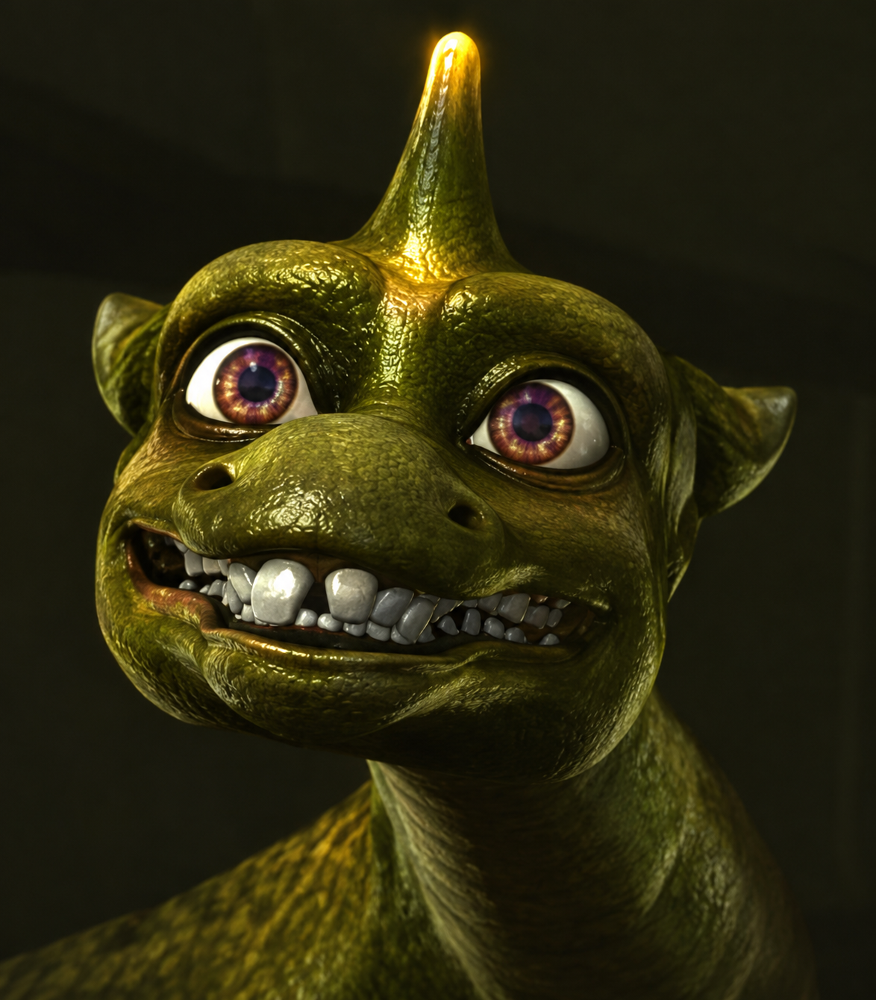

Slyder
About
Slyder is Lydia's dragon minion. He is fierce and loyal, and he does her dirty work.
In the movie
Slyder burns down the girls' home and chases them on their journey. He later captures Liana for Lydia.
Relationships
- Lydia: His master
- Liana and Alexa: The heroes he chases
Fun facts
- Mark Acheson voices Slyder.